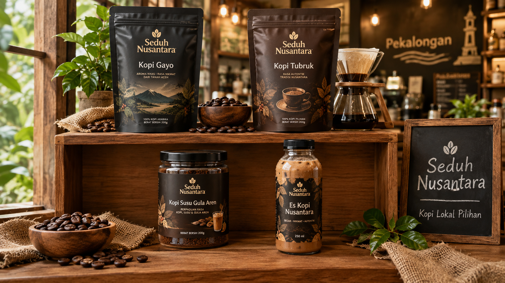
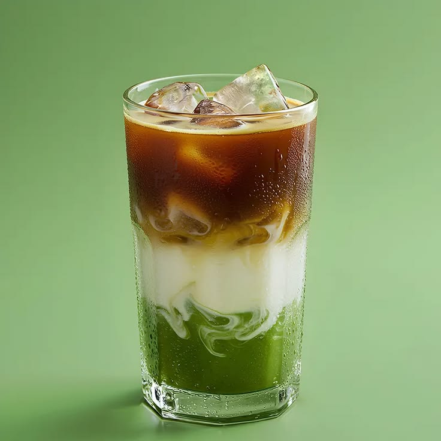

Kopi Gayo
Kopi Arabika khas Gayo, Aceh, dengan aroma yang kaya dan rasa yang lembut.
Rp 15.000
UMKM Pekalongan
Setiap cangkir adalah cerita - kopi lokal pilihan yang diseduh dengan hati, menemani setiap momen belajar, bekerja, dan berdiskusi.

Kopi Arabika khas Gayo, Aceh, dengan aroma yang kaya dan rasa yang lembut.
Rp 15.000
Kopi tradisional khas Indonesia, dengan cita rasa yang khas dan kandungan kafein yang tinggi.
Rp 10.000
Minuman kopi susu dengan tambahan gula aren, memberikan rasa manis yang nikmat.
Rp 18.000

Minuman dingin yang menggabungkan cita rasa kopi dengan cendol, es, dan susu.
Rp 17.000
Jl. Pahlawan KM 5, Rowolaku, Kec. Kajen, Kabupaten Pekalongan, Jawa Tengah 51161
Lihat di Google MapsAlamat: Jl. Pahlawan KM 5, Rowolaku, Kec. Kajen, Kabupaten Pekalongan
Jam Layanan: Senin - Minggu, 09.00 - 20.00
WhatsApp: Hubungi melalui WhatsApp